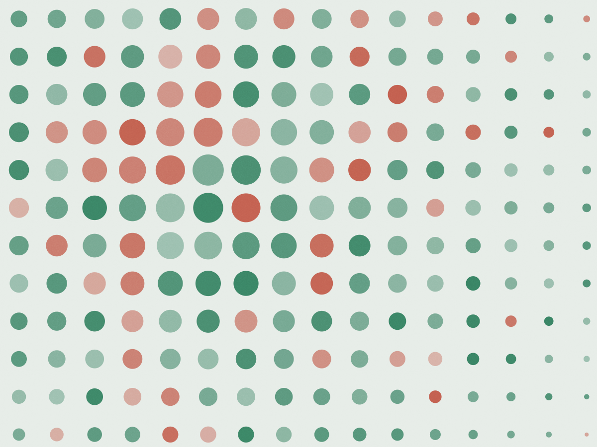

Clínica de família · CNPJ 41.882.507/0001-63
Consulta de 40 minutos com o mesmo médico
Somos uma clínica particular de sete salas na Rua Maranhão, 421. Atendemos por ordem de agenda, com horário marcado e prontuário único — o mesmo médico acompanha você e sua família, do primeiro exame à revisão anual.
- 40 minpor consulta, cronometrados
- R$ 260particular, com retorno em 15 dias
- 48 hpara o laudo dos exames no portal
- 600 mdo metrô Higienópolis-Mackenzie
Cinco tipos de consulta, valor na mesa
Cada especialidade tem duração própria porque cada uma pede outro tempo de escuta. Os valores abaixo são particulares; nada é cobrado antes da confirmação por escrito.
- Clínica médica 40 minRetorno em até 15 dias incluso, com cópia do prontuário impressa no fim. R$ 260
- Pediatria 45 minCurva de crescimento no gráfico da OMS e carteira de vacinação conferida item por item. R$ 280
- Cardiologia com ECG 50 minEletrocardiograma na sala ao lado, laudo assinado no mesmo dia. R$ 340
- Ginecologia 40 minInclui coleta de preventivo quando indicado, com resultado em 5 dias úteis. R$ 300
- Teleconsulta 25 minPara revisão de exame e renovação de receita. Não substitui a consulta presencial. R$ 190
Quem está na clínica, em cada dia
| Dia | Clínica médica | Cardiologia | Pediatria | Coleta |
|---|---|---|---|---|
| Segunda | Dra. Helena · manhã e tarde | — | Dra. Camila · manhã | 7h–11h |
| Terça | Dra. Helena · tarde | Dr. Otávio · manhã | Dra. Camila · manhã | 7h–11h |
| Quarta | Dra. Helena · manhã e tarde | — | Dra. Camila · manhã | 7h–11h |
| Quinta | Dr. Renan · tarde | Dr. Otávio · manhã e tarde | Dra. Camila · manhã | 7h–11h |
| Sexta | Dra. Helena · manhã | Dr. Otávio · manhã | — | 7h–11h |
| Sábado | Dr. Renan · 8h–12h | — | — | 7h–10h |
Última consulta marcada 40 minutos antes do fechamento. Encaixes só por telefone.
Quatro médicos e uma secretaria que sabe seu nome
- HB Dra. Helena Barros Clínica médica, com residência em saúde da família pela Santa Casa. Segunda, quarta e sexta.
- ON Dr. Otávio Nunes Cardiologia com área de atuação em hipertensão. Faz o ECG e entrega o laudo na hora. Terça e quinta.
- CP Dra. Camila Prado Pediatria. Atende de recém-nascido a 14 anos, com puericultura a cada dois meses no primeiro ano.
- RA Dr. Renan Aguiar Clínica médica com foco em saúde do homem e medicina do esporte amador. Quinta e sábado.
- MS Márcia Siqueira Secretaria e faturamento. Responde o WhatsApp entre 8h e 18h e monta o relatório de reembolso.
Exame simples resolve na mesma visita
- Coleta de sangue de segunda a sábado, das 7h às 11h, com jejum de 8 horas. A sala 2 abre antes da secretaria.
- Laudo liberado no portal do paciente em 48 horas, assinado pelo laboratório parceiro da Rua Piauí.
- Eletrocardiograma em 15 minutos, curativo, nebulização e soroterapia feitos pela enfermeira Denise, com pedido médico.
- Pedidos de imagem (ultrassom, tomografia, ressonância) são encaminhados para a clínica da Alameda Santos, a 900 m.
Não fazemos teste de covid, teste de gravidez de farmácia nem atestado sem avaliação.

Cinco convênios e reembolso com relatório
- Bandeirante Saúde — plano Prata e Ouro
- Cooperativa Médica Viver
- Plano Âncora Familiar
- Saúde dos Professores (APEOESP)
- Sindicato dos Bancários — Regional SP
Confirme a elegibilidade pelo telefone antes de marcar: a autorização leva até 2 dias úteis e alguns planos exigem guia em papel.
Particular com reembolso
Emitimos nota fiscal no CPF do paciente, recibo com CID quando o plano pede e um relatório de uma página descrevendo a conduta. Fica pronto em até 3 dias úteis e vai por e-mail.
Taxa de relatório: R$ 0 · segunda via de nota: R$ 0
O que os pacientes contam
Cheguei com três exames de anos diferentes na mão e a Dra. Helena montou a linha do tempo na minha frente. Saí com dois pedidos, não com oito.
Mandei mensagem às 9h20, fui atendido às 11h no mesmo dia e recebi a receita no celular antes de chegar em casa. O retorno de 15 dias veio na agenda sem eu pedir.
A agenda de amanhã abre às 7h
Rua Maranhão, 421 — Higienópolis, São Paulo. Metrô Higienópolis-Mackenzie a 600 m e estacionamento conveniado no nº 380, a R$ 12 a hora.